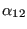

Keyword type: step
This procedure is used to determine the buckling load of a structure. The load active in the last non-perturbative *STATIC step, if any, will be taken as preload if the perturbation parameter is specified on the *STEP card. All loads previous to a perturbation step are removed at the start of the step; only the load specified within the buckling step is scaled till buckling occurs. Right now, only the stress stiffness due to the buckling load is taken into account and not the large deformation stiffness it may cause.
Buckling leads to an eigenvalue problem whose lowest eigenvalue is the scalar the load in the buckling step has to be multiplied with to get the buckling load. Thus, generally only the lowest eigenvalue is needed. This value is also called the buckling factor and it is always stored in the .dat file.
SOLVER is the only parameter. It specifies which solver is used to determine the stress stiffness due to the buckling load and to perform a decomposition of the linear equation system. This decomposition is done only once. It is repeatedly used in the iterative procedure determining the eigenvalues (the buckling factor). The following solvers can be selected:
Default is the first solver which has been installed of the following list: SGI, PaStiX, PARDISO, SPOOLES and TAUCS. If none is installed, no eigenvalue analysis can be performed.
The SGI solver should by now be considered as outdated.SPOOLES is very fast, but has no out-of-core capability: the size of systems you can solve is limited by your RAM memory. With 32GB of RAM you can solve up to 1,000,000 equations. TAUCS is also good, but my experience is limited to the  decomposition, which only applies to positive definite systems. It has an out-of-core capability and also offers a  decomposition, however, I was not able to run either of them so far. PARDISO is the Intel proprietary solver and is about a factor of two faster than SPOOLES. The most recent solver we tried is the freeware solver PaStiX from INRIA. It is really fast and can use the GPU. For large problems and a high end Nvidea graphical card (32 GB of RAM) we got an acceleration of a factor between 3 and 8 compared to PARDISO. We modified PaStiX for this, therefore you have to download PaStiX from our website and compile it for your system. This can be slightly tricky, however, it is worth it!
decomposition, however, I was not able to run either of them so far. PARDISO is the Intel proprietary solver and is about a factor of two faster than SPOOLES. The most recent solver we tried is the freeware solver PaStiX from INRIA. It is really fast and can use the GPU. For large problems and a high end Nvidea graphical card (32 GB of RAM) we got an acceleration of a factor between 3 and 8 compared to PARDISO. We modified PaStiX for this, therefore you have to download PaStiX from our website and compile it for your system. This can be slightly tricky, however, it is worth it!
First line:
The eigenvalues are automatically stored in file jobname.dat.
Example: *BUCKLE 2
calculates the lowest two buckling modes and the corresponding buckling factors. For the accuracy, the number of Lanczos vectors and the number of iterations the defaults are taken.
Example files: beam8b,beamb.